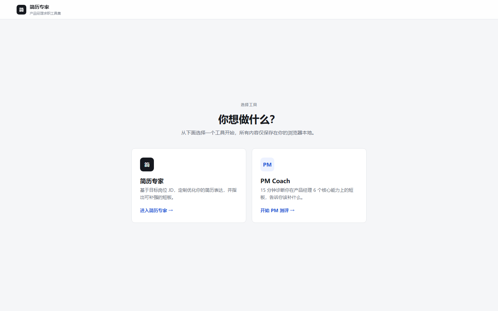
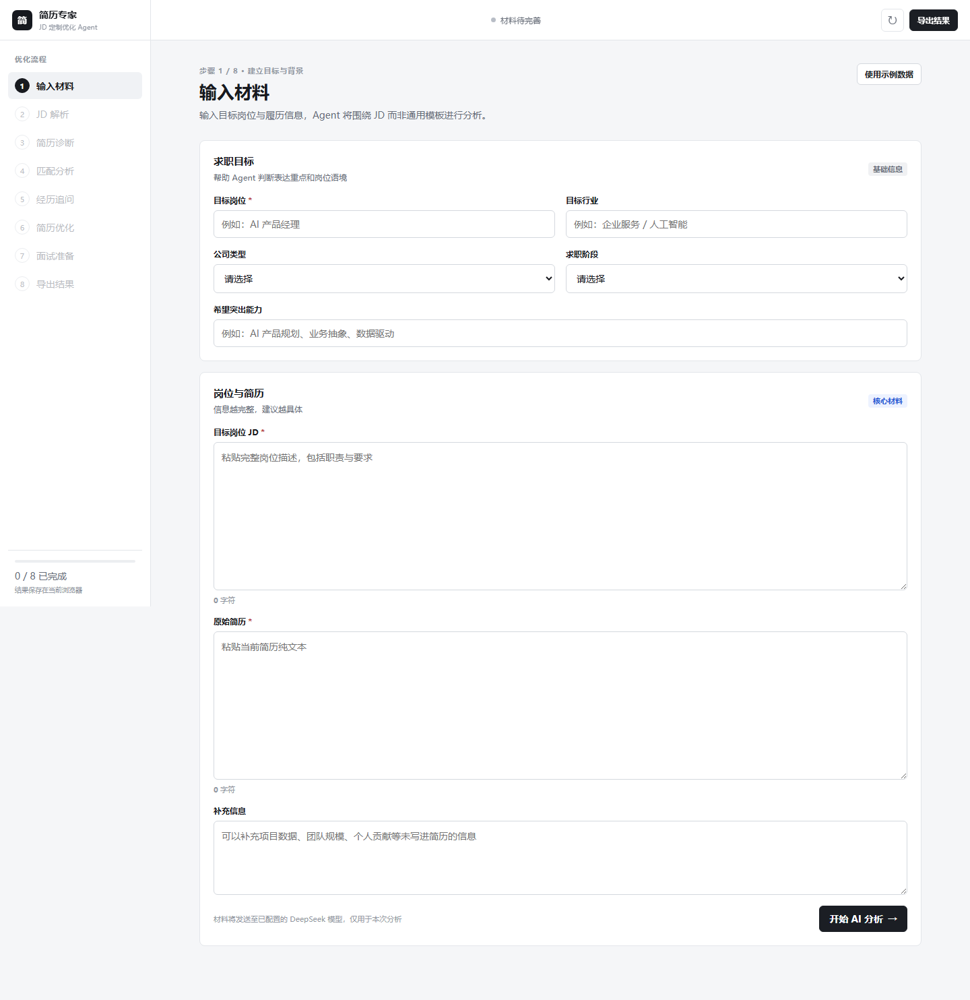
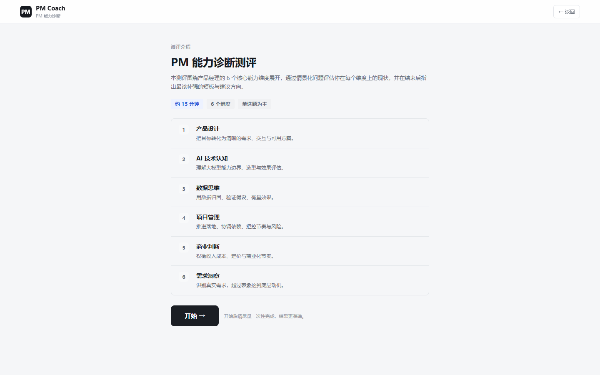

不理解目标 JD
同一份简历海投多个岗位，经历与职责、硬性要求和关键词脱节。
02 · JD-ALIGNED CAREER AGENT
把“我适不适合这个岗位”和“我的简历应该怎么改”放进同一个产品：先测能力短板，再解析目标 JD、追问事实证据、生成定向简历并准备面试。

用户需要知道目标 JD 要什么、自己的证据够不够、应该补充什么，以及面试会被追问什么。
同一份简历海投多个岗位，经历与职责、硬性要求和关键词脱节。
工具只改措辞，不会追问个人贡献、业务结果和可以自证的项目证据。
优化后的表达可能被追问，但用户没有同步准备风险点和回答材料。
两个模块解决不同阶段的问题，并使用结构化数据让诊断和生成结果可追溯。
通过六维能力模型、五级题目难度和简化版自适应选题，输出能力雷达图与基于真实错题的诊断。
从目标岗位、JD 和原始简历出发，依次完成 JD 解析、简历诊断、匹配分析、证据追问、定向优化和面试准备。
截图来自当前可运行项目，材料通过本地服务转发至已配置模型，不在前端暴露密钥。


当前题库覆盖六个维度和五级难度；产品设计模块占比较高，下一阶段需要结合答题数据校准分布、难度与区分度。
每个维度从中等难度开始，优先补齐维度覆盖；答对后提高目标难度，答错后降低难度。分数结合原分数、题目难度和答题结果更新，同时保留每道题的选择、正确性和分数变化记录。
固定输入输出契约，降低模型返回格式不稳定导致的流程中断。
每项改写应对应用户材料；缺失信息进入待补充或追问，不虚构数字。
超时与解析失败进行有限重试，仍失败时保留已完成步骤并明确提示。
完成 JD 解析、诊断、追问、修改对照、简历生成和面试准备流程；完成 527 题、六维能力测评、自适应选题、动态评分与雷达图输出，并接入 DeepSeek。
增加事件埋点与体验问卷，验证主流程完成率、出稿耗时和诊断认同率；校准题库难度与维度分布，并通过真实求职反馈验证定向优化的有效性。